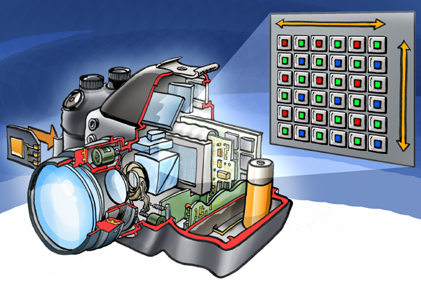
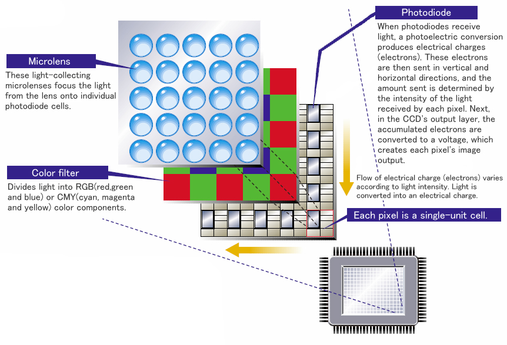
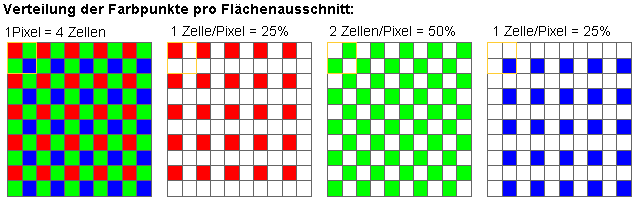

Bei Digitalkameras fällt das Licht durch die Linse auf einen rechteckigen Sensor mit einem Raster von lichtempfindlichen Fotozellen. Diese erzeugen elektrische Signale, die kameraspezifisch verarbeitet und auf Zahlenwerte abgebildet werden. Bei einer Digitalkamera bildet der zweidimensionale Sensorchip bereits das Raster der Bildpunkte. Das digitale Bild wird in einem Schritt erfasst. Deshalb ist die Digitalisierung von Bildern mit einer Digitalkamera viel schneller als mit einem Scanner.
Die Genauigkeit der Abbildung hängt vor allem von der Anzahl der einzelnen Fotosensoren auf dem Sensorchip (Auflösung) und der Verarbeitung der Sensorsignale ab.

Quelle: https://upload.wikimedia.org/wikipedia/commons/3/31/Chipincamera.jpg
Bei der CCD- (Charge Coupled Device) Kamera wird das einfallende Licht über Mikrolinsen auf die einzelnen Fotozellen geführt. Das Licht verändert in den Fotozellen die elektrische Ladung. Die veränderten Ladungen müssen aus den Fotozellen über Schieberegister "ausgelesen" und mit Analog/Digital-Wandlern in Zahlenwerte umgewandelt werden. Dieser Vorgang benötigt einige Zeit, was die Anzahl Bilder pro Sekunde beschränkt.

Quelle: http://av.jpn.support.panasonic.com/support/global/cs/dsc/knowhow/knowhow27.html
Bei der CMOS- (Complementary Metal Oxide Semiconductor) Kamera sind die Fotozellen auf dem Sensorchip mit Elektronik umgeben, die das durch das einfallende Licht bewirkte elektrische Signal direkt umwandelt und verstärkt. Die Signalwerte können direkt "ausgelesen" werden, was die Anzahl möglicher Bilder pro Sekunde gegenüber CCD-Kameras vergrössert.
Quelle: http://meroli.web.cern.ch/lecture_cmos_vs_ccd_pixel_sensor.html
Zwischen den Mikrolinsen und den Fotozellen auf dem Sensorchip liegt eine Farbfilter-Matrix. Diese bewirkt, dass jede Fotozelle nur je einen Farbanteil des einfallenden Lichts erfasst. Die Farbfilter-Matrix ist in Vierer-Blöcke unterteilt, die je ein Rot-Filter (R), ein Blau-Filter (B) und zwei Grün-Filter (G) umfassen. Diese Verteilung berücksichtigt die unterschiedliche Empfindlichkeit der Sinneszellen im menschlichen Auge (nötiges Intensitätsverhältnis: Rot 30% - Grün 59% - Blau 11%).

Quelle: http://www.bnhof.de/~didactronic/CCD/CCDmatrix.htm
Das nachstehende Video illustriert die softwaremässige Berechnung der Farbwerte in der Digitalkamera.